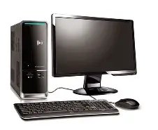

La tecnologia fotma parte de nuestra vida diaria.
Nos permite comunicarnos, estudiar, trabajar y
encontrar soluciones a diferentes problemas.

Las computadoras son herramientas que permiten
procesar informacion, crear documentos, desarrollar
programas y realizar diversas actividades escolares.
Aprende a utilizar correctamente una computadora
ayuda a desarrollar habilidades utiles para la escuela
y para el futuro profecional.
Algunos dispositivos que utilizamos frecuentemente son:
Puedes consultar informacion adicional sobre computadoras,
programacion y herrmaientas digitales en los siguientes sitios web